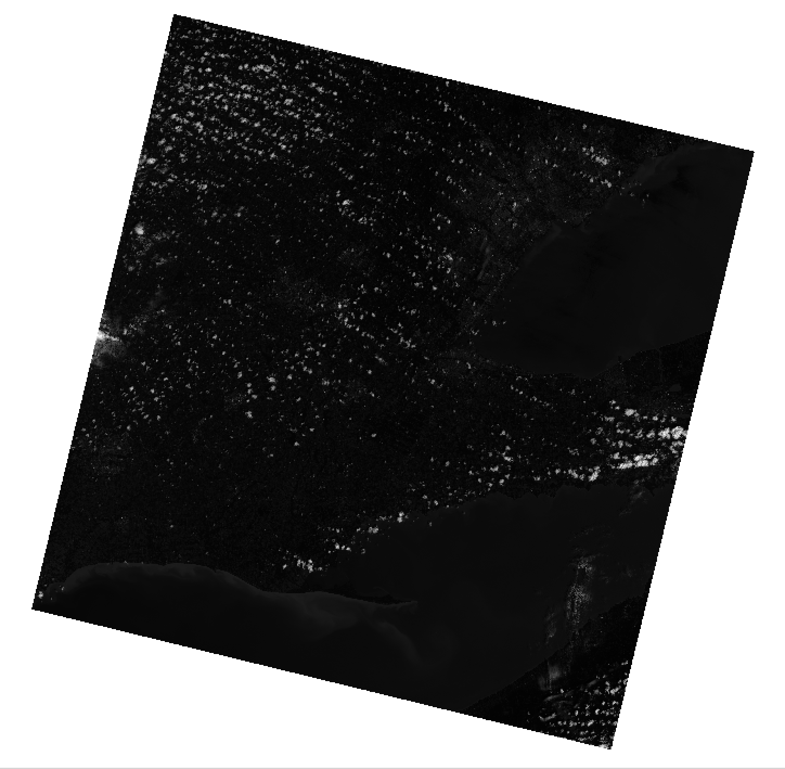

GEOG*3420 Remote Sensing of the Environment (W21)
Lab Assignment 2
Introduction
The purpose of this lab exercise is to introduce students to the techniques involved in the preprocessing of satellite imagery. This includes both the conversion of raw digital numbers (DN) to radiance values, as well as various contrast enhancement techniques used to improve image quality.
Readings and Resources
The following materials, combined with your textbook (pages 189-197), can be used as background materials and to help in answering the assignment questions.
Before you begin
IMPORTANT INFORMATION: You will need to download the data associated with this lab assignment from the GEOG*3420 CourseLink site. These data, as usual, are quite large and you will need to consider data storage solutions (e.g. a dedicated USB memory stick for the course).
What you need to hand in
You will hand in a printed report summarizing the answer to each of the questions in the following exercise along with the necessary colour images. Notice that you will need to have paid your lab fee to have printing privileges in the Hutt building computer labs.
Part 1: Image Histograms
Using your visualization software of choice (e.g. QGIS, ArcGIS, Whitebox GAT), display the Band1.tif image, contained in the decompressed Lab 2 data folder which you should have downloaded from the CourseLink site. You should find the the image looks something like the following:

This scene contains extensive cloud cover. The clouds are so bright in this image that every other landcover appears to be extremely dark, nearly black, by comparison. Therefore, the presence of clouds is significantly degrading our ability to discern the relatively small contrast (differences in brightness) between other types of land covers. Using the RasterHistogram, and the WhiteboxTools Runner application, calculate the frequency distribution graph (histogram) for the band1.tif image.
Include a screenshot of the Band 1 image histogram with your Lab hand-in. (1 mark)
Notice that the frequency distribution of values contained in the band1 image is heavily skewed, with a long tail of values to the right of the distribution peak.
1.1. Is the frequency distribution (histogram) positively or negatively skewed? (1 mark)
This distribution's tail is associated with the cloud cover present in the image. Most of the non-cloud pixels in the image occupy the two peaked histogram bins associated with the lowest DN values. The greytone values of the image display palette are being spread across the entire range of DNs contained within the image. However, most of the variation in DNs that we are interested in, that is, the range of DNs within the non-cloud portions of image, are only displayed with a very narrow range of darker tones as a result. This is the reason for the poor contrast in the displayed image.
1.2. What is the characteristic property of clouds that have caused this impact on the image above? (1 mark)
1.3. What are the minimum and maximum DNs within the
band1image? Hint you may use either your visualization software or the RasterSummaryStats tool to determine these values. The GeoTIFF file in which these data are contained has a 16-bit radiometric resolution. Do the image data completely occupy the bit-depth of the file? (3 marks)
Now display the band5.tif image and use the RasterHistogram tool to create this image's frequency distribution.
Include a screenshot of the Band 5 image histogram with your Lab hand-in. (1 mark)
1.4. How would you describe the overall contrast characteristics of the
band5image compared withband1? Which is easier to distinguish individual agricultural fields in? What is the peak in the frequency distribution of theband5histogram associated with? (4 marks)
Part 2: Contrast Enhancement
Contrast enhancements, sometimes called radiometric enhancements, are a class of image operations that modify the frequency distribution of image values in an effort to optimize the contrast and overall brightness to highlight particular ranges of digital numbers (DNs). The goal of any image enhancement operation is to improve the visualization and interpretation of the data. Contrast enhancement is also an important step in the process of generating a visually appealing colour composite image. If you recall the Balance Contrast Enhancement option that we encountered when we used the CreateColourComposite tool, it was performing a type of contrast adjustment internally to ensure that none of the input bands were proportionally brighter than the others.
There are many reasons why the contrast of satellite imagery may be poorly suited to interpretation, including atmospheric scattering and the presence of haze or cloud cover. The band1 image from the previous section is an example of how cloud cover can significantly degrade image quality. In this section of the lab assignment, we will try to improve image radiometric quality through the use of various contrast enhancement tools.
WhiteboxTools offers at least six common contrast enhancement methods for use with single-bands of multispectral imagery including:
- GaussianContrastStretch
- HistogramEqualization
- MinMaxContrastStretch
- PercentageContrastStretch
- SigmoidalContrastStretch
- StandardDeviationContrastStretch
Each of these techniques for performing contrast enhancements offer various advantages and disadvantages that make them applicable under differing image conditions.
First, let's explore the use of the GaussianContrastStretch tool. Using VS Code, create a Python script in your Lab 2 folder (which must also contain the WBT folder with the latest version of the WhiteboxTools library) called contrast.py. Copy the following code into your script file and run it using the VS Code terminal. Be sure to modify the wbt.work_dir to point to the folder containing your lab data.
from WBT.whitebox_tools import WhiteboxTools
def main():
wbt = WhiteboxTools() # Initialize WhiteboxTools
wbt.work_dir = "/path/to/your/lab/data/files/" # Update this
# perform the stretch
wbt.gaussian_contrast_stretch(
i="band1.tif",
output="band1_gauss_cs.tif",
num_tones=4096 # 12-bit depth output
)
# visualize the histogram of the resulting image
wbt.raster_histogram(
i="band1_gauss_cs.tif",
output="band1_gauss_cs.html"
)
print("Operation complete!")
main()
2.1. In the script above, you may notice that we have scaled the image to have 4096 greytones, or a 12-bit image depth. However, as we learned from the previous section, the original image had something closer to a 16-bit depth. Do you think that we will be losing significant radiometric information in doing so? Why or why not? (Hint, you may want to read about the Landsat 8 sensor here.)
Include screenshots of both the resulting contrast-stretched image (
band1_gauss_cs.tif) and the associated histogram with your lab hand-in. (2 marks)2.2. Describe how the histogram of the stretched image compares to the original
band1histogram. How has it been modified? (2 marks)
If you haven't already done so, display the band1_gauss_cs.tif using your visualization software.
2.3. Compare the contrast of the Gaussian stretched image to the original
band1. In particular, what objects/land covers are associated with the darkest and the brightest parts of the image? Are you able to distinguish features, such as individual agricultural fields, better in the contrast enhanced image than the original? How much contrast is there between the water (Lake Ontario and Lake Erie) and the surrounding land? Are the streets within urban centres (e.g. Toronto) visible or are they "washed out"? (5 marks)
Now try to modify your script to use the HistogramEqualization tool instead. Be sure to save the modification as a new file. Also, generate the histogram for this newly created histogram-equalized image as well. Be sure to examine the help for this tool in the WhiteboxTools User Manual, so that you are sure you are calling the histogram_equalization() function correctly. You will also want to modify the script so that the output files are called band1_he_cs.tif and band1_he_cs.html instead.
Include your script for performing the histogram equalization contrast stretch, as well as screenshots of the resulting image (
band1_he_cs.tif) and histogram, with your lab hand-in. (3 marks for the script + 2 marks for the screenshots = 5 marks)
2.4. Discuss the effects of the histogram equalization contrast stretch on the quality of the image. (5 marks)
Finally, modify your script again, this time making it apply the MinMaxContrastStretch tool to the band1 image. A min-max contrast stretch is one in which:
DNout = ((DNin – min_val)/(max_val – min_val)) × num_tones
Any DNin < min_val is assigned min_val in the output and any DNin > max_val is assigned max_val in the output. That is, all values in the input image below or above specified thresholds (min_val and max_val) are fully saturated in the output image. Use your knowledge of the original image histogram, and the DN value range (from section 1) to help guide you in setting appropriate values for the min_val and max_val parameters. Although it is somewhat subjective what these parameters should be, min_val should be greater than the overall image minimum and max_val should be set to a lower value than the image maximum. This parameterization will require some experimentation with these values until you are satisfied that you have set them appropriately. Remember, ideally, you would like to saturate the tonal variation within the cloud cover, in order to create an image that emphasizes as much detail in the non-cloud areas as possible. Use the level of detail in the urban areas (do the streets seem 'washed out'), the agricultural fields (can you see the differences in tones within and between fields), and the land-lake contrast as guides.
Include your final script for performing the min-max contrast stretch, as well as screenshots of the resulting image (
band1_minmax_cs.tif) and histogram, with your lab hand-in. (3 marks for the script + 2 marks for the screenshots = 5 marks)2.5. Which of the three tested contrast enhancement techniques afforded you the greatest control over the contrast properties of the output image. Be sure to provide justification for your answer. (2 marks)
2.6. What were the final values that you settled on for the
min_valandmax_valparameters? Which of the two parameters did you find you needed to change. How did this final image compare with the other contrast enhanced images (i.e. using the Gaussian stretch and histogram equalization)? (6 marks)2.7. How did the shape of the histogram of the min-max contrast stretched image compare with the original image histogram? (2 marks)
Part 3: Conversion to Top-of-Atmosphere (TOA) Reflectance
In Lab Exercise 1, we learned that the metadata file distributed with each Landsat 8 scene contains information needed to convert the raw and uncalibrated digital numbers (DNs) contained in Landsat band images into either radiance or reflectance values. Certain remote sensing applications (e.g. image classification) require the use of calibrated imagery data containing reflectance values, and sometimes, radiance values. Therefore, it is important to know how to transform the raw imagery into calibrated form.
3.1. What are the differences between image DNs, radiance values, and reflectance values? (3 marks)
The process of calibrating raw satellite imagery into reflectance values may include several steps, often including a conversion of DN to radiance, a model for removing the effects of varying illumination within the scene (due to the sun angle, the earth-sun distance, terrain, and clouds and cloud shadows), and an atmospheric correction model. There are varying levels of sophistication that can be used during calibration and exact process will also vary depending on the exact satellite and sensor (Landsat 8 and the OLI sensor in our case). We are going to examine the basic method used to convert Landsat 8 Level 1 DNs into reflectance values. Based on this useful documentation (please read this over), we can see that the basic conversion to top-of-atmosphere reflectance values, including a correction for sun angles, is:
ρ = (M * DN + A) / sin(θSE) (Eq. 1)
where ρ is the transformed reflectance value (at a wavelength), M is the band-specific multiplicative rescaling factor, A is the band-specific additive rescaling factor, and θSE is the sun elevation, in radians. M, A, and θSE can each be found within the metadata file distributed with a Landsat scene and are specific to the geographic location of the scene and the time that it was acquired.
3.2. What is difference between the top-of-atmosphere reflectance and surface reflectance? (2 marks)
Open the metadata file associated with the lab data, LC08_L1TP_018030_20170624_20170713_01_T1_MTL.txt, using a text editor such as VS Code. Try to locate the sun elevation and each the reflectance rescaling parameters in the file.
3.3. How do the reflectance rescaling parameters compare to the radiance rescaling parameters? What do you think this difference may imply about the pre-processing that was done on the imagery before it was made available? (3 marks)
We could use Eq. 1 above to convert each of the bands within our scene data set manually. However, this would be a tedious task and the opportunities for using the incorrect parameter by accident is fairly high. Instead, we're going to write a script to automatically read the parameters from the metadata file and then apply the DN-to-reflectance transform to each of our bands. Using VS Code, create a Python script in your Lab 2 folder called reflectance.py. Copy the following code into your script file and run it using the VS Code terminal and don't forget to modify the wbt.work_dir appropriate for your data location.
from math import radians, sin
import os
from WBT.whitebox_tools import WhiteboxTools
def main():
wbt = WhiteboxTools() # Initialize WhiteboxTools
wbt.work_dir = os.path.join(os.path.dirname(
__file__), "lab2_data") # Update this
wbt.verbose = False # This way the script won't output so many updates about progress
# Open the metadata text file associated with the Landsat scence
metadata = os.path.join(
wbt.work_dir, "LC08_L1TP_018030_20170624_20170713_01_T1_MTL.txt")
fh = open(metadata)
# These two lists will contain the rescaling parameters.
mult_term = []
add_term = []
for line in fh:
# Read the file line-by-line looking for the reflectance transformation parameters
if "REFLECTANCE_MULT_BAND_" in line:
mult_term.append(float(line.split("=")[1].strip()))
elif "REFLECTANCE_ADD_BAND_" in line:
add_term.append(float(line.split("=")[1].strip()))
elif "SUN_ELEVATION" in line:
# We're also getting the sun elevation from the metadata. It has
# to be converted to a float and radians.
sun_elevation = radians(float(line.split("=")[1].strip()))
fh.close() # Be sure to close an open file
# We'll transform the first five bands of the data set
for i in range(0, 5):
# The bands are indexed 1, 2, 3... but the mult_term list is indexed 0, 1, 2...
band_num = i + 1
print("Transforming band {}...".format(band_num))
inFile = "band{}.tif".format(
band_num)
# This is where the DN-to-reflectance transform equation happens.
# It creates two temporary rasters that are continually over-written.
wbt.multiply(inFile, mult_term[i], "tmp1.tif")
wbt.add("tmp1.tif", add_term[i], "tmp2.tif")
# The final transformed raster is called bandX_reflect.tif
wbt.divide("tmp2.tif", sin(sun_elevation),
"band{}_reflect.tif".format(band_num))
# Provide some sort of indication that the job is done.
print("Operation complete!")
main()
This script may take a fair bit of time before completing but it will at least provide you with periodic updates on progress (e.g. Transforming band 1...). Hopefully, the script runs without issue for you. It is however one of the longest scripts that we've seen so far and because it involves reading and parsing text data, there is the potential for system-specific bugs to occur. If you encounter errors when you run the above script, examine the script carefully to see if you can identify the source of the bug. Once you have gained a full understanding of what the script is doing (see the detailed comments), and have exhausted debugging options (e.g. adding print statements in the script to see how far it progresses, searching the Internet for solutions), then you may approach fellow students or the GTA for assistance.
3.4. Exactly how would you need to alter the above script if you had wanted to transform all 9 bands of the Operational Land Imager (OLI) Landsat 8 imagery available for this data set? Identify which line(s) of the script you would need to alter and how. (1 mark)
3.5. What do you think would happen when you run your script if the sun elevation parameter were set to zero in the metadata file? (1 mark)
Once you have successfully run the script, display each of the five transformed bands using your visualization software. You will notice that they look very similar to the original bands, however, their value range is very different. Each pixel now contains an approximate reflectance value.
3.6. What are the minimum and maximum values within each of the transformed images. Are these value ranges expected for reflectance data? (6 marks)
3.7. Describe the specific ways that you would need to modify the above script if you wanted to perform a DN-to-radiance transformation instead of the DN-to-reflectance we performed. (Hint: be sure to read over the documentation before answering.) (4 marks)